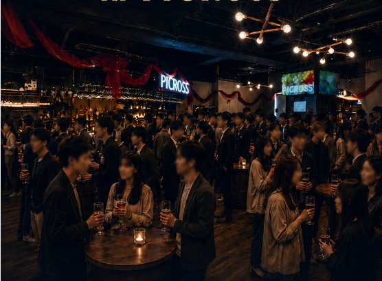
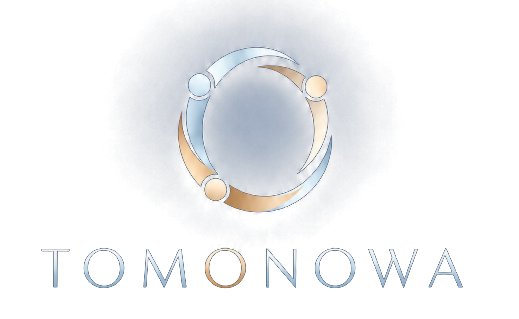

ちょうど話せる人数で締め切る。
毎回60名限定。人が多すぎて話せない、人酔いしてしまう、をつくらないための人数設計です。


大人になってからの、新しいコミュニティ。
TOMONOWAは、新しいつながりが生まれるイベントコミュニティです。
9/4–9/18 限定 ｜ RE:START PRICE ｜ 女性 ¥2,000・男性 ¥5,000 ｜ 60名限定
9月の開催・申込みを見る →WHAT IS TOMONOWA
TOMONOWAは、新しいつながりが生まれるイベントコミュニティ。
初参加でも、一人参加でも大丈夫。安心して会話を楽しめる空気と、自然に人とつながれるきっかけを、金曜の夜につくっています。
帰る頃に、また来たいと思える夜をつくる。
それがTOMONOWAです。
WHY TOMONOWA
毎回60名限定。人が多すぎて話せない、人酔いしてしまう、をつくらないための人数設計です。
年齢ごとのテーマを用意。初回は年齢フリー、その後は自分に近い世代の回を選べます。
会話に入りづらい時も、少し席を変えたい時も。自然に次の輪へご案内します。
受付から最初の会話まで、アテンダーがきっかけをつくります。
またふらっと飲みに行ける関係が、自然に広がる場所です。
SEPTEMBER 2026
全回60名限定
大塚 PICROSS
9/4–9/18 ONLY
9月前半の3週間だけ、復活祭の特別価格でご案内します。
9/4 FRI
RE:START PRICE・第1週大型アップデート・PICROSS NIGHT復活の第1回。初参加も、久しぶりの人も歓迎です。
9/4–9/18限定｜RE:START 特別価格
9/11 FRI
RE:START PRICE・第2週20〜38歳の方が対象。気の合う人と、肩の力を抜いて話せる金曜。
9/4–9/18限定｜RE:START 特別価格
9/18 FRI
RE:START PRICE・最終週20〜40歳の方が対象。自然な会話から、新しいつながりが生まれる夜。
9/4–9/18限定｜RE:START 特別価格
9/25 FRI
通常価格20〜33歳の方が対象。同世代と、また会いたくなる月末の金曜。
ATTENDER TEAM
会場には、ただ進行するだけではないアテンダーがいます。
会話に入りづらい時、少し空気を変えたい時、話したくない相手がいる時。遠慮せず声をかけてください。あなたが心地よく過ごせるよう、自然に次の輪へご案内します。
SAFE · WARM · NATURAL
PARTICIPANT VOICES
ひとりでも、友達とでも。
安心して話せる夜を目指して。
“初めて一人で行くので、正直かなり緊張していました。でもアテンダーの方が自然に話せる輪へ入れてくれて、気付いたら何人もの人と話せていました。一人で来たのに、帰る頃にはまた来たいと思えるくらい楽しかったです。”
PARTICIPANT STORY · SAMPLE“最初は内輪で終わってしまうかもと思っていましたが、会場の雰囲気が落ち着いていて、男性の方とも自然に話せました。仕事にもきちんと向き合っている人が多く、安心して楽しめる会だと感じました。”
PARTICIPANT STORY · SAMPLE“他のイベントは人数が多すぎて、結局誰とも深く話せないことが多かったです。TOMONOWAは人数感がちょうどよく、一人ひとりと落ち着いて会話できました。”
PARTICIPANT STORY · SAMPLE“ガツガツした出会いの場は苦手だったので少し不安でした。でも、無理に連絡先交換をする空気ではなく、まず会話を楽しめる雰囲気でした。”
PARTICIPANT STORY · SAMPLE“人数だけを集めた会ではなく、男女ともに話しやすく、仕事にも自分の時間にも向き合っている人が多い印象でした。”
PARTICIPANT STORY · SAMPLEFAQ
変更・キャンセルは、原則として開催3日前までにご連絡ください。無断キャンセルの場合、今後のご参加をお断りする場合があります。
もちろんです。お一人で来られる方も多く、アテンダーがいるので初参加でも安心してお越しください。
お申込み後に自動メッセージで受付票をお送りします。当日は受付票を確認できる状態で会場へお越しください。
当日受付でお振込みが確認できる画面をご提示ください。
TOMONOWA SEPTEMBER
そんな夜が、TOMONOWAにはあります。
大塚駅徒歩1分のPICROSSで、次の金曜を待っています。